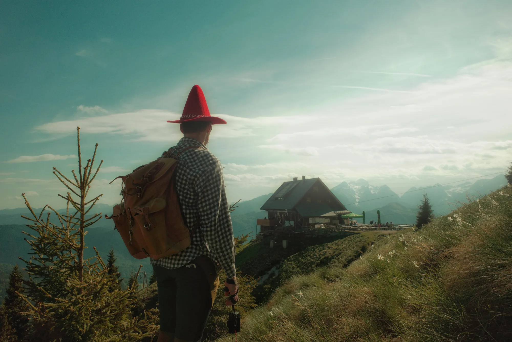

02 / Slovenia · Greece
Outsidethe frame
Mountains, weather and the figures who move through them—landscape as scale, mood and companion.

Weather / distance
A path can be a portrait. A mountain can be an atmosphere.
From bright alpine ridges to blue winter valleys and the soft horizon of the Greek coast. Includes an experimental hiking editorial.
“Out here, people become marks in the landscape—and the landscape becomes part of the story.”
Next seriesWedding →